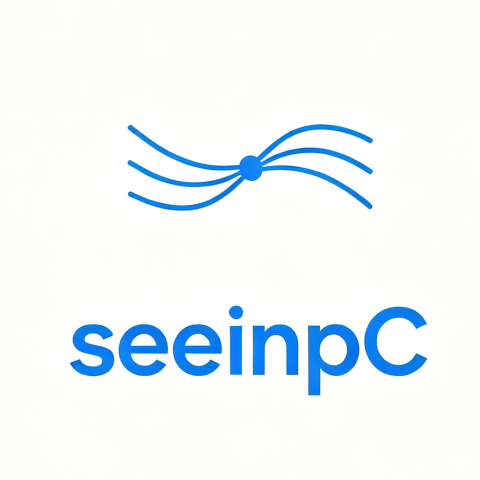

seeinpc
运维 VPN
运行日志
设置
v-
运维 VPN
✕
＋ 添加 seeinps 运维
手动添加 VPN
刷新状态
还没有运维入口。点击「添加 seeinps 运维」，登录 seeinps 后自动获取已添加的运维 HTTP 代理并生成卡片。
debug
info
warn
error
应用级别
1 秒刷新
2 秒刷新
5 秒刷新
10 秒刷新
暂停刷新
打开日志目录
logs/seeinpc_YYYYMMDD.log
（日志加载中…）
常规
连通性探测间隔
15 秒
30 秒
60 秒
关闭窗口时最小化到托盘
日志
日志级别
debug
info
warn
error
配置与日志目录
打开配置目录
打开日志目录
关于
版本
-
管理员权限
-
wintun 驱动
-
升级检查
敬请期待
退出 seeinpc
保存设置
驱动检测中
当前无运行的 VPN
添加 seeinps 运维
服务器地址固定（see.timemsee.cn / see.timesee.cn 自动回退），无需填写。
登录 seeinps 获取
直接填写运维代理
web-ui 外部端口
*
seeinps 登录用户名
*
seeinps 登录密码
*
验证码
*
登录成功后自动获取该 seeinps 已添加的运维 HTTP 代理，每个代理生成一张卡片。连续输错 3 次需验证码，6 次锁定 30 分钟。
运维代理ID（端口 1-65535）
*
运维代理用户名
运维代理密码
目标网段
*
添加
必填，至少一个网段（决定哪些流量走 VPN，不支持 0.0.0.0/0）
凭「运维ID + 代理账号 + 代理密码」直接生成一张 VPN 卡片，无需登录 seeinps。
取消
获取 / 添加
手动添加 VPN
未接入 seeinps 管理页时的备选方式：凭「运维ID + 代理账号 + 代理密码」手工填写。
名称
*
代理服务器
端口号（1-65535）
*
代理用户名
代理密码
目标网段
*
添加
必填，至少一个网段（决定哪些流量走 VPN，不支持 0.0.0.0/0）
内网探测目标（可选）
取消
添加
填写代理密码
该运维入口已从 seeinps 同步。出于安全考虑，seeinps 不返回代理密码明文，请向管理员获取后一次性填写（本机 DPAPI 加密保存）。
代理密码
*
取消
保存
编辑运维入口
目标网段决定哪些流量走虚拟网卡（对应 seeinps 的 ACL）。
名称
代理服务器
连接状态探测
默认仅探测 HTTP 代理是否可用；勾选后额外探测下方内网目标是否可达
内网探测目标
应填写一个该内网中稳定可达的 TCP 端口
目标网段
添加
移除入口
取消
保存